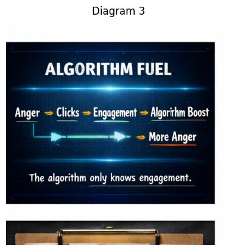

Anger → Clicks → Engagement → Algorithm Boost → More Anger

This diagram shows how the platform itself amplifies emotional content.
It’s not about ideology or politics. It’s about how engagement systems work.
Think of the algorithm like a thermostat that only measures heat, not the quality of the fire. 🔥
If something produces a lot of heat, the system assumes it must be important.
Anger is one of the strongest engagement emotions.
When people feel anger they tend to:
Anger activates people faster than calm information.
From the platform’s perspective, anger is high-energy behavior.
When anger is triggered, people click.
Clicks include:
Each click sends a signal to the system:
“This content is interesting.”
The algorithm can’t read the emotion behind the click. It only sees activity.
Engagement is the scoreboard of the platform.
Examples:
The more engagement a post receives, the more the system believes:
“People want to see this.”
Even arguments count as engagement.
In fact, arguments often produce more activity than agreement.
Once engagement crosses certain thresholds, the platform increases distribution.
This is the boost phase.
The content gets shown to:
The post spreads wider and faster.
Now a feedback loop appears.
More exposure means:
Which tells the algorithm to boost it again.
So the cycle becomes:
Anger → Clicks → Engagement → Boost → More Anger
It’s a self-amplifying loop.
“The algorithm only knows engagement.”
This means the system isn’t judging:
It only measures behavioral activity.
If people react strongly, the system interprets that as success.
Identity Panic Toolkit focuses on disrupting engagement loops.
When people respond with:
the engagement cycle weakens.
No engagement → no boost.
Without the boost, the outrage content loses reach.
So this diagram shows something subtle:
The outrage economy doesn’t run only on ideas or beliefs.
It runs on behavior signals.
And the smallest signal in that system is simply your attention.